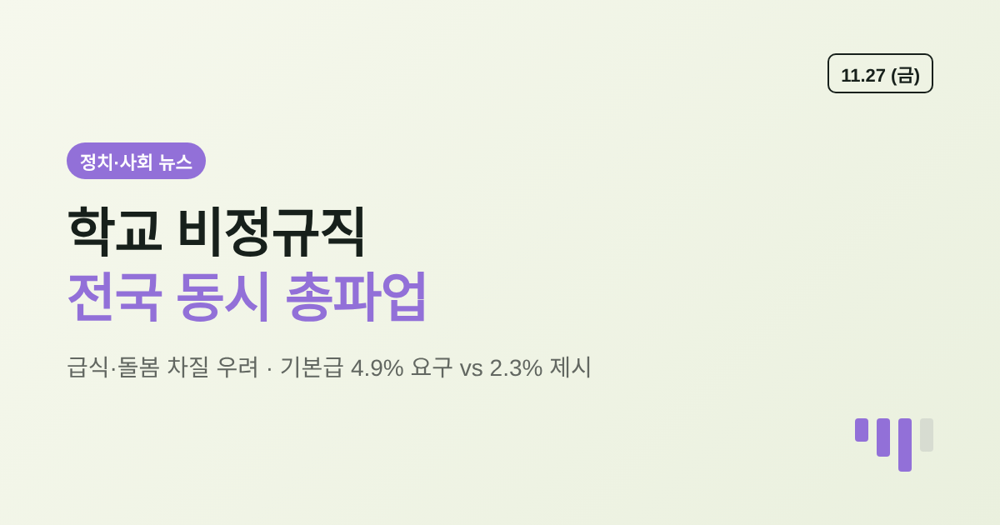
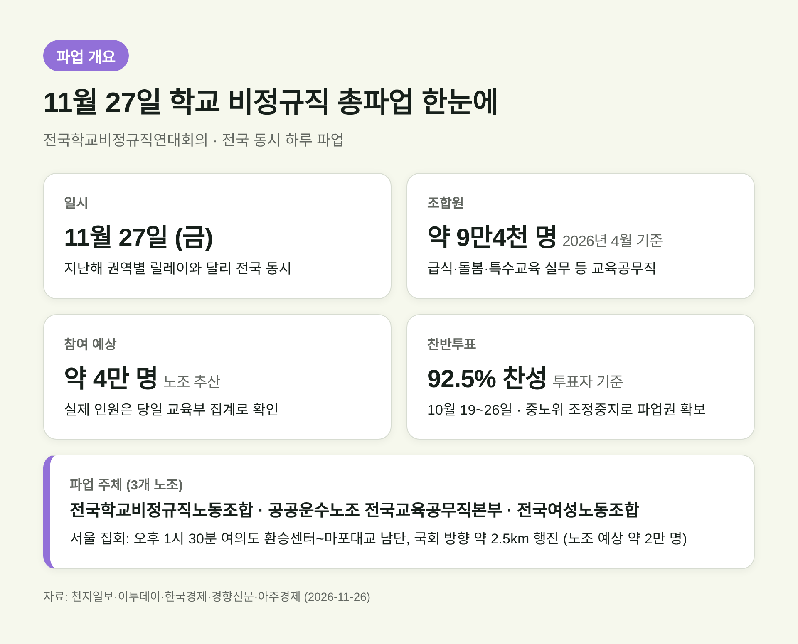
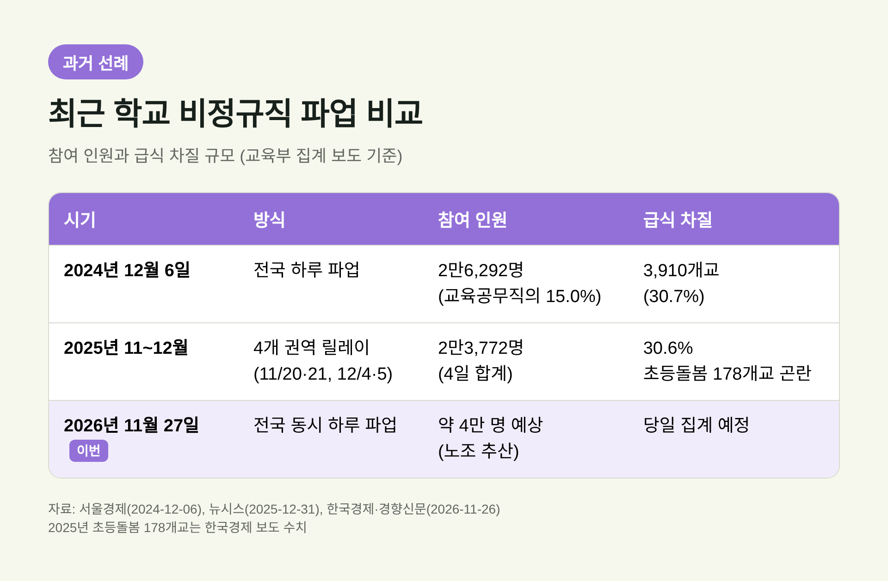
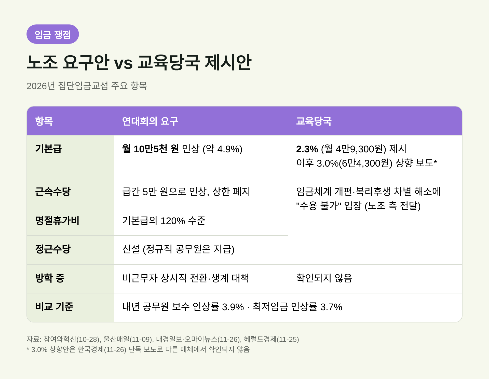
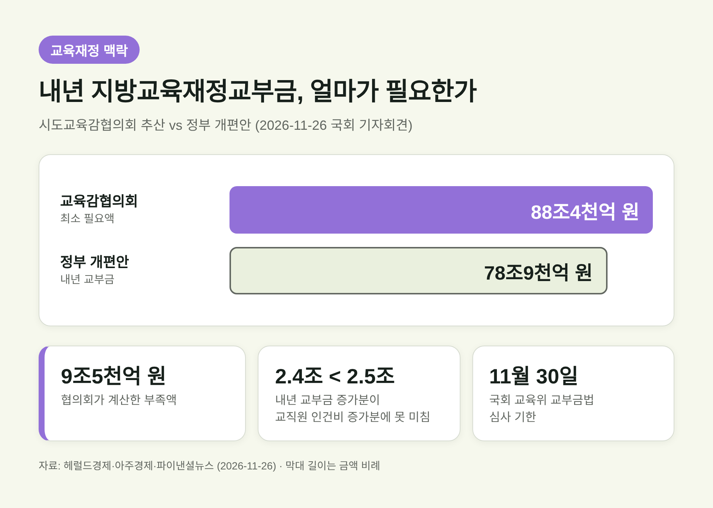
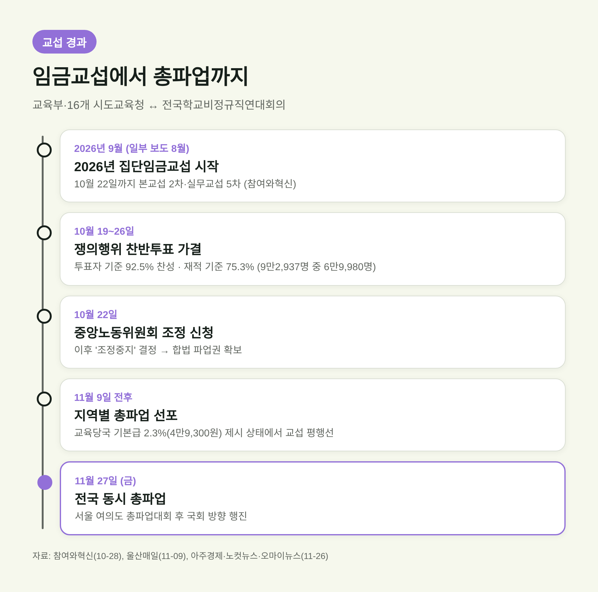
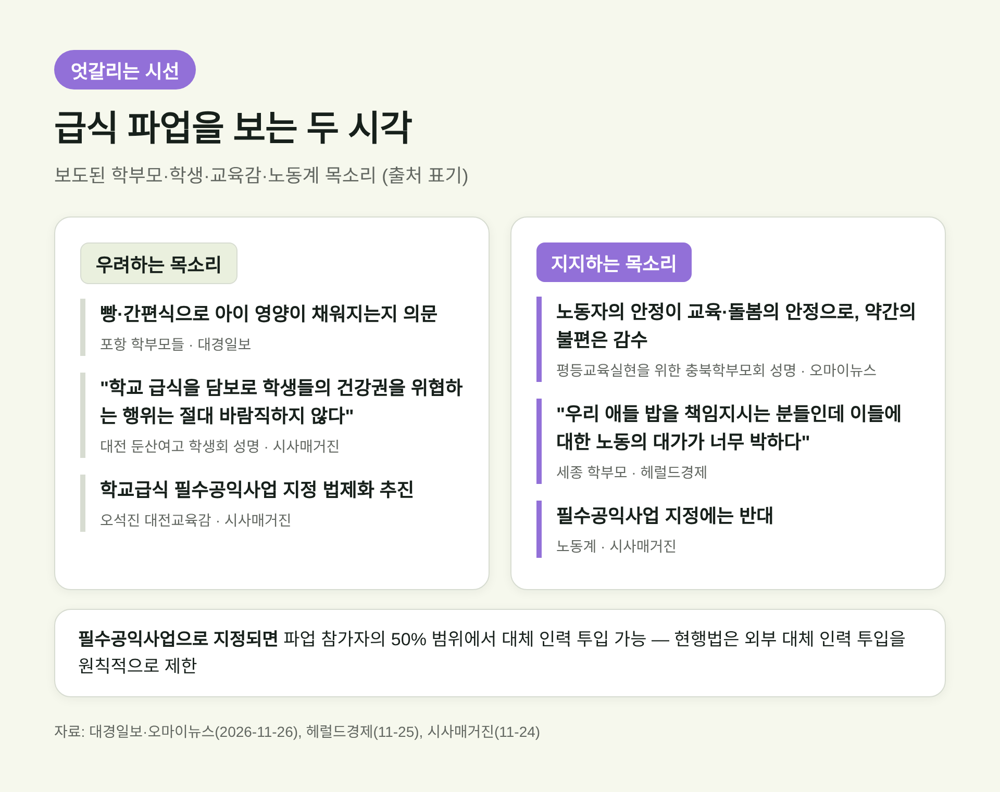

학교 비정규직 27일 전국 총파업, 급식·돌봄 차질과 임금교섭 쟁점 정리

이번 글에서는 11월 27일 학교 비정규직 총파업을 정리해 보겠습니다. 무엇이 예정돼 있는지, 노조와 교육당국이 어디서 갈라섰는지, 학부모가 무엇을 확인하면 되는지를 차례로 짚습니다.
세 줄 요약
- 급식·돌봄을 맡는 교육공무직 노동자들이 27일(금) 전국에서 동시에 하루 파업합니다. 노조는 약 4만 명 참여를 예상합니다.
- 핵심 쟁점은 기본급 인상 폭입니다. 노조는 월 10만5천 원(약 4.9%)을 요구했고, 교육당국은 처음에 2.3%(4만9,300원)를 제시했습니다.
- 교육부는 대체식·도시락 지참, 돌봄 대체 프로그램 같은 대책을 내놓았습니다. 학교별 변경 사항은 가정통신문으로 안내됩니다.
■ 무슨 일이 일어나나
전국학교비정규직연대회의(이하 연대회의)가 27일 총파업에 들어갑니다. 연대회의는 전국학교비정규직노동조합, 공공운수노조 전국교육공무직본부, 전국여성노동조합 3개 노조로 이뤄져 있습니다. 조합원은 올해 4월 기준 약 9만4천 명입니다(천지일보·이투데이·한국경제).
학교 급식 조리사와 조리실무사, 초등 돌봄전담사, 특수교육 실무사처럼 학교 운영을 받치는 직종이 대부분입니다. 노조 측은 조합원의 약 90%가 여성이라는 점도 강조해 왔습니다(참여와혁신).
규모는 노조 추산으로 약 4만 명입니다. 경향신문은 이 수치를 전국교육공무직본부의 예상치로 전했습니다. 서울에서는 오후 1시 30분 여의도 환승센터에서 마포대교 남단 구간까지 총파업대회를 연 뒤, 국회 방향으로 약 2.5km를 행진합니다. 집회 인원은 대부분의 매체가 "약 2만 명"으로 보도했습니다. 헤럴드경제는 노조 발표를 인용해 약 5만 명으로 전했는데, 실제 인원은 파업 당일 교육부 집계로 확인됩니다.

■ 왜 이번 파업이 주목받나
예전과 다른 점은 방식입니다. 지난해에는 권역을 나눠 나흘에 걸쳐 릴레이로 파업했습니다. 올해는 전국이 같은 날 한꺼번에 멈춥니다(한국경제).
지난해 상황을 보면 영향의 크기를 가늠할 수 있습니다. 2025년 11~12월 릴레이 파업의 총 참여 인원은 2만3,772명, 급식 차질은 30.6%였습니다(뉴시스·한국경제). 첫날인 11월 20일 서울·인천·강원·세종·충북에서는 3,298개교 가운데 1,089개교가 정상 급식을 하지 못했습니다(머니투데이). 이튿날 광주·전남·전북·제주에서는 급식 운영 학교의 40.1%인 822곳이 급식을 멈췄고, 대부분 빵과 우유로 대신했습니다.
한 해 전인 2024년 12월 6일 하루 파업 때는 2만6,292명(교육공무직의 15.0%)이 참여했고, 3,910개교(30.7%)에서 정상 급식이 이뤄지지 않았습니다(서울경제). 이번에는 노조 예상치가 그보다 크고, 전국이 동시에 움직인다는 점에서 현장 부담이 더 몰릴 수 있습니다. 다만 참여율은 지역과 직종에 따라 크게 다릅니다.

■ 핵심 쟁점 ① 기본급과 수당
가장 큰 간극은 기본급입니다. 연대회의는 월 10만5천 원 인상을 요구했습니다. 내년 공무원 보수 인상률 3.9%에, 정규직과의 격차를 줄이기 위한 몫을 더한 수치라는 설명입니다(참여와혁신).
교육당국이 처음 내놓은 안은 2.3%, 월 4만9,300원이었습니다(울산매일·오마이뉴스·헤럴드경제). 한국경제는 이후 3.0%(6만4,300원)로 올린 안이 제시됐다고 보도했습니다. 이 상향안은 다른 매체에서는 확인되지 않았습니다. 노조는 어느 쪽이든 공무원 인상률 3.9%, 최저임금 인상률 3.7%에 못 미친다고 비판합니다(헤럴드경제).
수당과 복리후생도 쟁점입니다. 노조는 근속수당 급간을 5만 원으로 올리고 상한을 없애자고 합니다. 명절휴가비를 기본급의 120% 수준으로 높이고, 정규직 공무원이 받는 정근수당을 신설하자는 요구도 있습니다(울산매일·대경일보). 방학 중 근무하지 않아 임금을 받지 못하는 '방학 중 비근무자'를 상시직으로 바꾸자는 요구는 해마다 빠지지 않는 항목입니다.
울산매일에 따르면 교육당국은 임금체계 개편과 복리후생수당 차별 해소 요구에 "수용 불가" 입장을 유지해 왔습니다. 교육당국에도 사정은 있습니다. 서울시교육청은 2027년 교육공무직 인건비를 9,245억 원(9.9% 증가)으로 잡았는데, 여기에는 내년 임금 인상분이 아직 반영되지 않았습니다(헤럴드경제).

■ 핵심 쟁점 ② 급식실 인력과 교육재정
이번 파업은 임금만의 문제가 아닙니다. 연대회의는 학교급식법 개정에 맞춰, 내년 7월부터 모든 학교 급식실에 인력을 추가 배치할 예산을 확보하라고 요구합니다. 교육부가 진행 중인 급식실 적정 인력 기준 연구용역의 근거 자료를 공개하라는 요구도 함께 냈습니다(천지일보·이투데이).
더 큰 배경은 지방교육재정교부금 개편입니다. 정부는 8월 21일, 내국세의 20.79%를 자동으로 교육청에 나눠주던 방식을 없애고 경상성장률과 학령인구 변화를 반영하는 방식으로 바꾸겠다고 밝혔습니다(참여와혁신). 노조는 이렇게 되면 급식과 교육복지, 그리고 자신들의 처우가 흔들린다고 봅니다. 학생 수는 줄어도 돌봄·특수교육·기초학력 같은 수요는 오히려 늘고 있다는 논리입니다.
이 대목에서 노조와 교육감들의 주장이 겹칩니다. 파업 전날인 26일, 시도교육감협의회는 국회에서 기자회견을 열었습니다. 정근식 협의회장(서울시교육감) 등 교육감 12명이 참석했고, 내년 교부금이 최소 88조4천억 원은 필요하다고 밝혔습니다. 정부 개편안대로면 78조9천억 원에 그쳐 9조5천억 원이 모자란다는 계산입니다(헤럴드경제·아주경제).
협의회는 내년 교부금 증가분(약 2조4천억 원)이 교직원 인건비 증가분(약 2조5천억 원)에도 못 미친다고 지적했습니다. 그 차액을 국가가 메우도록 법에 적어 달라는 요구도 냈습니다. 교육공무직 임금을 올리려면 결국 교육청 재원이 필요합니다. 교섭 테이블의 임금 문제와 국회의 재정 문제가 한 줄로 이어져 있는 셈입니다. 국회 교육위원회의 교부금법 심사 기한은 30일입니다.

■ 여기까지 온 과정
교육부와 16개 시도교육청은 9월부터 연대회의와 올해 집단임금교섭을 이어왔습니다. 참여와혁신은 8월부터 교섭이 시작돼 10월 22일까지 본교섭 2차, 실무교섭 5차가 열렸다고 전했습니다. 시작 시점 표기는 매체마다 다릅니다.
입장 차가 좁혀지지 않자 연대회의는 10월 22일 중앙노동위원회에 조정을 신청했습니다. 10월 19~26일 쟁의행위 찬반투표에서는 투표자의 92.5%가 찬성했습니다. 재적 조합원 기준으로 보면 9만2,937명 가운데 6만9,980명, 75.3%가 찬성한 것입니다(참여와혁신). 중노위가 '조정중지'를 결정하면서 노조는 합법적인 파업권을 얻었습니다(울산매일).
지난해 교섭이 어떻게 끝났는지도 참고가 됩니다. 2025년도 교섭은 11~12월 릴레이 파업과 12월 집중교섭 결렬을 거친 끝에, 올해 2월 8일 새벽에야 잠정합의에 이르렀습니다. 기본급 7만8,500원 인상, 연 185만 원 정액이던 명절휴가비를 기본급의 100%로 바꾸는 정률제 도입이 핵심이었습니다(여성신문·에듀프레스). 양측은 6~12월 임금체계 개편 노사 TF를 운영하기로 했는데, 그 결과가 이번 교섭에서 어떻게 다뤄지는지는 확인되지 않았습니다.

■ 교육당국의 입장과 대책
최은옥 교육부 장관 직무대행은 이렇게 밝혔습니다. "노동조합의 단체행동권을 존중하나, 학생들의 교육활동과 건강을 보호하고 학부모님들의 불편이 없도록 노사협의를 통해 조속히 합리적인 합의점을 찾고자 노력하겠다"(이투데이·브레이크뉴스). 정근식 서울시교육감도 교섭 타결을 위해 성실히 임하겠다고 했습니다(천지일보).
교육부는 종합상황실을 꾸리고 급식·돌봄·특수교육·유아교육 4개 분야 대응반을 편성했습니다(아주경제). 분야별 대책은 다음과 같습니다.
- 급식: 위생 관리를 강화하고, 정상 급식이 어려우면 식단 간소화나 대체식을 제공합니다. 도시락 지참을 안내하는 학교도 있습니다. 대체식은 빵·우유·샌드위치·삼각김밥 등이 거론됩니다(파이낸셜뉴스·한국경제).
- 돌봄: 초등돌봄은 학교별 대체 프로그램을 마련해 정상 운영을 원칙으로 합니다.
- 특수교육: 학교별로 대책을 세우고, 필요하면 단축수업 등으로 탄력 운영합니다.
- 사전 안내: 교육활동에 변경이 생기면 학교가 가정통신문 등으로 학부모에게 미리 알립니다.
지역별로 사정은 다릅니다. 경북은 교육공무직 1만332명 가운데 759명(7.35%)이 참여할 것으로 보고, 934개교 중 195개교에서 정상 급식이 어려울 것으로 예상했습니다(뉴스핌). 같은 날 대경일보는 경북 참여 예상을 744명·227개교로 보도해 수치에 차이가 있습니다. 대구는 8,395명 중 약 536명(6.4%), 대전은 약 700명이 참여할 것으로 예상됩니다(대경일보·연합뉴스). 경기는 지난해 약 13%가 참여해 약 850개교가 대체식을 내거나 급식을 하지 못했습니다(OBS).
■ 학부모가 확인할 것
공식 안내를 기준으로 정리하면 이렇습니다.
- 자녀 학교의 가정통신문을 먼저 확인합니다. 급식 형태와 돌봄 운영 변경은 학교별로 사전 안내하도록 돼 있습니다.
- 도시락 지참 여부를 확인합니다. 대체식을 주는 학교도 있고, 도시락을 안내하는 학교도 있습니다.
- 초등돌봄은 원칙적으로 운영되지만, 학교별 대체 프로그램의 시간과 방식이 평소와 다를 수 있습니다.
- 특수교육 대상 학생은 단축수업 가능성을 학교에 문의해 보시길 권합니다.
■ 학부모 불편과 노동권, 엇갈리는 시선
이번 파업을 보는 시선은 하나로 모이지 않습니다.
우려하는 쪽의 목소리가 있습니다. 대경일보가 만난 포항의 학부모들은 파업 자체는 이해한다면서도, 빵과 간편식으로 아이의 영양이 채워지는지 물었습니다. 부족하면 가정에서 따로 챙기라는 안내가 "의아하다"는 반응도 나왔습니다. 대전 둔산여고 학생회는 성명에서 "학교 급식을 담보로 학생들의 건강권을 위협하는 행위는 절대 바람직하지 않다"고 밝혔습니다(시사매거진).
지지하는 쪽의 목소리도 있습니다. '평등교육실현을 위한 충북학부모회'는 노동자의 안정이 곧 교육과 돌봄의 안정으로 이어진다며 약간의 불편은 감수할 수 있다는 성명을 냈습니다(오마이뉴스). 헤럴드경제가 전한 세종의 한 학부모는 "우리 애들 밥을 책임지시는 분들인데 이들에 대한 노동의 대가가 너무 박하다"고 말했습니다.
제도를 둘러싼 논쟁도 이어집니다. 오석진 대전교육감은 학교급식을 필수공익사업으로 지정하는 법제화를 추진하겠다는 입장을 밝힌 바 있습니다(시사매거진). 지정되면 파업 참가자의 50% 범위에서 대체 인력을 쓸 수 있습니다. 노동계는 이 지정에 반대하는 입장입니다.
지난해 요구안의 중심이 임금과 방학 중 무임금, 복리후생이었다면, 올해는 교부금 개편이라는 재정 문제까지 함께 올라와 있습니다. 아이의 끼니와 노동자의 생계, 교육재정이 한 테이블에서 다뤄지는 셈입니다.

■ 앞으로의 전망
가장 가까운 분기점은 27일 당일입니다. 교육부가 집계할 실제 참여 인원과 급식 차질 학교 수가 노사 양측의 다음 행보를 가를 것입니다.
두 번째는 국회입니다. 교부금법 개정안 심사 기한이 30일로 다가와 있습니다. 교육청 재원이 어떻게 정해지느냐에 따라 교육당국이 내놓을 수 있는 임금안의 폭도 달라질 수 있습니다.
세 번째는 교섭 재개 시점입니다. 교육부는 노사협의로 조속히 합의하겠다고 했고, 노조도 대화의 문은 열려 있다고 밝혀 왔습니다(울산매일). 다만 추가 파업 일정은 현재까지 확인되지 않았습니다. 지난해처럼 해를 넘겨 신학기 직전에 타결될지, 그보다 이르게 접점을 찾을지는 아직 알 수 없습니다.
정리하면 이렇습니다. 이번 파업은 임금 몇만 원의 차이를 넘어, 줄어드는 학생 수 속에서 학교의 돌봄과 급식을 누가 어떤 재원으로 지탱할지를 묻고 있습니다.
— 아이의 한 끼와 그 한 끼를 짓는 사람의 생계는 따로 떼어 생각하기 어렵습니다.
어느 쪽 손을 들어야 하느냐고 물으신다면, 우선 양쪽의 숫자를 차분히 보는 일부터 시작하자고 답하고 싶습니다.
참고자료
- 파이낸셜뉴스, 「내일 아이들 급식으로 빵·도시락 먹는다(전국 학교 비정규직 27일 총파업)」, 2026-11-26 — https://www.fnnews.com/news/202611261840094267
- 경향신문, 「학교 비정규직 27일 총파업…급식·돌봄 차질 우려에 교육당국 비상 대응」, 2026-11-26 — https://www.khan.co.kr/article/202611261004001/
- 천지일보, 「학교 비정규직 4만명 내일 총파업… 급식·돌봄 차질 우려」, 2026-11-26 — https://www.newscj.com/news/articleView.html?idxno=3452313
- 이투데이, 「학교비정규직 내일 총파업…급식 차질 땐 대체식, 돌봄은 정상 운영」, 2026-11-26 — https://www.etoday.co.kr/news/view/2653104
- 한국경제, 「내일 급식은 빵이에요?…학교비정규직 4만명 총파업 예고」, 2026-11-26 — https://www.hankyung.com/article/202611261129H
- 아주경제, 「전국 학교비정규직 4만 명 27일 총파업…교육부·서울시교육청, 급식·돌봄 비상대응 가동」, 2026-11-26 — https://www.ajunews.com/view/20261126154943940
- CBS노컷뉴스, 「학교비정규직 4만명 내일 총파업…교육당국, 급식·돌봄 비상대응」, 2026-11-26 — https://www.nocutnews.co.kr/news/6612809
- 브레이크뉴스, 「교육부, 27일 교육공무직 파업 대비…급식·돌봄 차질 없게 대응」, 2026-11-26 — http://www.breaknews.com/1254279
- 헤럴드경제, 「27일 전국 학교 급식 차질…조리사 '쌤'이 위생모 대신 머리띠 둘러맨 이유는?」, 2026-11-25 — https://biz.heraldcorp.com/article/10949445
- 참여와혁신, 「학교비정규직, '저임금 구조 해결·교육재정 사수' 총파업 예고」, 2026-10-28 — https://www.laborplus.co.kr/news/articleView.html?idxno=41725
- 울산매일, 「울산 학교비정규직 27일 총파업 예고…임금교섭 평행선」, 2026-11-09 — https://www.iusm.co.kr/news/articleView.html?idxno=1070265
- 대경일보, 「학교비정규직 내일 총파업…대체급식에 학부모 우려 목소리」, 2026-11-26 — https://www.dkilbo.com/news/articleView.html?idxno=562311
- 시사매거진, 「전국 학교비정규직 27일 총파업…아이들 밥상 또 협상 카드 되나」, 2026-11-24 — https://www.sisamagazine.co.kr/article/1000000001031
- 오마이뉴스(충북인뉴스), 「충북 학교비정규직 노동자 27일 총파업」, 2026-11-26 — https://www.ohmynews.com/NWS_Web/View/at_pg.aspx?CNTN_CD=A0003288574&CMPT_CD=M0152
- 뉴스핌, 「경북 교육공무직원 759명 파업 참여 예상…220개교 영향」, 2026-11-26 — https://www.newspim.com/news/view/20261126001325
- 연합뉴스(서플 게재), 「학교 비정규직 내일 총파업…대전교육청, 대체식·도시락 제공」, 2026-11-26 — https://supple.kr/news/cmwx4vb83l8s7kwp8h34xkh1i
- OBS경인TV, 「경기도교육청, 내일 비정규직 파업 때 빵 등 대체식 지급」, 2026-11-26 — https://www.obsnews.co.kr/news/articleView.html?idxno=1545095
- 머니투데이, 「광주·제주 등 교육공무직 4500여명 파업…학교 40%가 급식 미운영」, 2025-11-21 — https://www.mt.co.kr/policy/2025/11/21/2025112116240417599
- 뉴시스, 「집중교섭에 이어 30일 추가 협상도 결렬」, 2025-12-31 — https://mobile.newsis.com/view/NISX20251231_0003461707
- 여성신문, 「학교비정규직 임단협 잠정합의..기본급 7만8천원·명절상여금 29만원 인상」, 2026-02-09 — https://www.womennews.co.kr/news/articleView.html?idxno=273477
- 에듀프레스, 「학교비정규직 임금교섭 타결…명절휴가비 기본급 100% 정률 지급」, 2026-02-09 — https://www.edupress.kr/news/articleView.html?idxno=21738
- 서울경제, 「학교 비정규직 2만 6200여명 파업…전국 학교 3910곳 급식 중단」, 2024-12-06 — https://www.sedaily.com/article/13991156
- 헤럴드경제, 「내년 9조5000억 펑크난다…교육감들 교부금 국회에 개편안 보완 촉구」, 2026-11-26 — https://biz.heraldcorp.com/article/10949859
- 아주경제, 「교육감협의회 "국회에 남은 나흘, 교육재정 지켜달라"」, 2026-11-26 — https://ajunews.com/view/20261126134539277